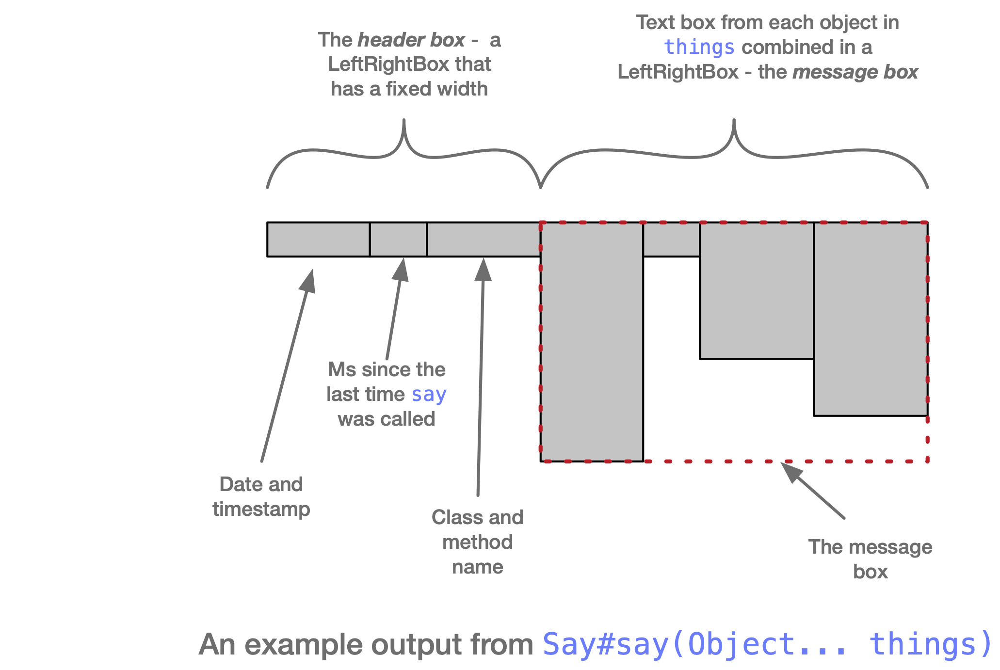

Class Say
A class to allow a convenient way to display debugging information that automatically includes
timestamp information and, most usefully, records which method contained the call to
say
.
The easiest way to think about what it does is to consider it in terms of text boxes,
AbstractTextBox.
The main method,
say
takes an array of objects, uses
TextUtils.getBoxFrom(Object)
on each to get a text box
and it then composes the text boxes into a
LeftRightBox
We call this the
message box
.
Each of the boxes can have many lines of text.
It then generates a "header" box - a text box that contains three text boxes that are composed into a LeftRightBox.
These contain some standard information:
-
The date and timestamp
-
The ms since
saywas last called -
The method name that called it. We use the stack trace of an exception to work this out.
The data and timestamp text box has a fixed width. If the text in the other two boxes is too wide then it will wrap onto another line
This means that the header box has a fixed width. It normally is only one line high.
This box is now composed in a LeftRightBox with the message text box and this final box is converted to a String and output.

An actual output, taken from a test. The code in the test does this:
ImGraph<String, String, String> g1 = makeTestGraph();
say("testGraph", g1);
say("visGraph", g1.getGraphVizGraph());
and the output generated looked like this:
2023-11-30 15:59:44.938 - ImGraphTest::testABCDGraphViz testGraph ImGraph: valueMap: [A->, B->, C->, D->, x->, y->, z->]
arcsOut: [A->[(A, x) art, (A, C) mod], B->[(B, z) art, (B, C) mod], C->[(C, z) art, (C, D) mod], D->[(D, y) art]]
arcsIn: [C->[(A, C) mod, (B, C) mod], D->[(C, D) mod], x->[(A, x) art], y->[(D, y) art], z->[(B, z) art, (C, z) art]]
2023-11-30 15:59:44.978 39 ImGraphTest::testABCDGraphViz visGraph digraph d {
rankdir=TD;
size="10,10";
node [shape = box];
"A" -> "x"[ label = "art"];
"A" -> "C"[ label = "mod"];
"B" -> "z"[ label = "art"];
"B" -> "C"[ label = "mod"];
"C" -> "z"[ label = "art"];
"C" -> "D"[ label = "mod"];
"D" -> "y"[ label = "art"];
"x";
"y";
"z";
}
-
Field Summary
Fields -
Constructor Summary
Constructors -
Method Summary
Modifier and TypeMethodDescriptionstatic voidClear any text in the current output buffer - or do nothing if not in quiet modestatic AbstractTextBoxformatColumns(ImList<?>... columns) Generate a text box representingcolumnsdisplayed as ...static StringformatDateTime(LocalDateTime dateTime) dateTimeformatted to the pattern"yyyy-MM-dd HH:mm:ss.SSS"static StringGet the output that has been stored in the buffer whileSaywas in quiet mode, or the empty string ifSaywas not in quiet mode.static longgetLocalTime(long ts) Get the offset of the timetsfrom the time that the VM startedstatic StringGet the current thread prefix or the default if one has not been setstatic booleanisQuiet()static voidline()static voidstatic voidprintNewLines(int count) Saycountnewlinesstatic voidRemove the current thread prefix - returning it to the defaultstatic voidThe main diagnostic display method.static voidstatic voidsayTopDown(Object... things) Saythingsbut arranging them top-down rather than left-rightstatic voidsayWithHeader(ImList<AbstractTextBox> boxes, ImList<Integer> widths, Object... things) Saythings- with a header box that is aLeftRightBoxcomposed ofboxes, each adjusted to have a width taken from the corresponding element ofwidthsstatic voidSayboxwith the extra prefix of the thread prefix (abbreviated to 8 characters)static voidsetCurrentThreadPrefix(String prefix) Set the current prefix in the thread toprefixstatic voidsetDefaultThreadPrefix(String prefix) Set the default thread prefix toprefix.static voidsetQuiet(boolean beQuiet) Set quiet mode on or off, depending onbeQuietstatic voidsetStart(long st) static voidstatic AbstractTextBoxCreate a text box with (essentially) two columns
-
Field Details
-
londonZone
The timezone for the UK
-
-
Constructor Details
-
Say
public Say()
-
-
Method Details
-
setDefaultThreadPrefix
Set the default thread prefix to
prefix. The default default is the empty string. -
setCurrentThreadPrefix
Set the current prefix in the thread to
prefix -
getThreadPrefix
Get the current thread prefix or the default if one has not been set
-
removeCurrentThreadPrefix
public static void removeCurrentThreadPrefix()Remove the current thread prefix - returning it to the default
-
formatDateTime
dateTimeformatted to the pattern"yyyy-MM-dd HH:mm:ss.SSS" -
printf
-
getLocalTime
public static long getLocalTime(long ts) Get the offset of the time
tsfrom the time that the VM started -
sayWithThreadPrefix
Say
boxwith the extra prefix of the thread prefix (abbreviated to 8 characters) -
sayTopDown
Say
thingsbut arranging them top-down rather than left-right -
say
The main diagnostic display method.
thingsare converted to text boxes and composed left-right with a single spaces between them.The first line has a number of standard header entries to help with debugging.
See the class comments for more details.
-
sayWithHeader
public static void sayWithHeader(ImList<AbstractTextBox> boxes, ImList<Integer> widths, Object... things) Say
things- with a header box that is aLeftRightBoxcomposed ofboxes, each adjusted to have a width taken from the corresponding element ofwidths -
sayBox
-
getBufferString
Get the output that has been stored in the buffer while
Saywas in quiet mode, or the empty string ifSaywas not in quiet mode. -
clearBuffer
public static void clearBuffer()Clear any text in the current output buffer - or do nothing if not in quiet mode -
setQuiet
public static void setQuiet(boolean beQuiet) Set quiet mode on or off, depending on
beQuiet -
printNewLines
public static void printNewLines(int count) Say
countnewlines -
setStart
public static void setStart(long st) -
isQuiet
public static boolean isQuiet() -
table
Create a text box with (essentially) two columns
The
thingsare split into pairs and the first thing in each pair is shown in the first column and the second in the second column.If there are an odd number of things, the last item in the second column is "MISSING"
There are actually three columns since the two columns are separated by a column of colons
Eg
table [ one, one, floccinaucinihilipilification, [99, 100, 101, 102, 103, 104, 105], three, null, four ]
gives:
one : one floccinaucinihilipilification : [99, 100, 101, 102, 103, 104, 105] three : null four : MISSING
-
formatColumns
Generate a text box representing
columnsdisplayed as ... er columnsEach column has a size that is 1 + the max width of the entries in the column
So if we have
col1 = [ten, eleven, twelve, thirteen, fourteen] col2 = [one, two, three, four, five, six] col3 = [seven, eight, nine]then
Say.formatColumns(col1, col2, col3).toString())will be
ten one seven eleven two eight twelve three nine thirteen four fourteen five six -
showTable
-
line
public static void line()
-